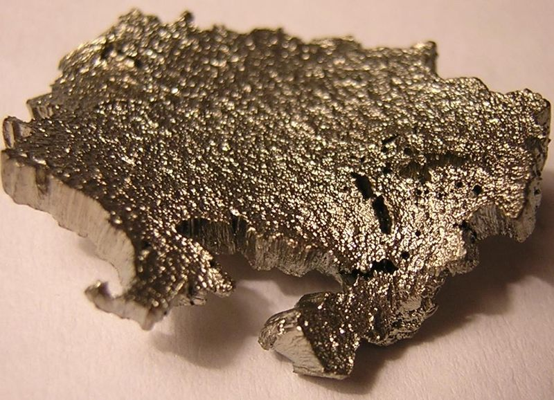

Periodic Table - Scandium - 21st

Scandium twenty-first element of the periodic table
The element Scandium (Sc) not yet known, was predicted by Mendeleev in 1869.
According to Mendeleev, the elements calcium and titanium should include an element
with intermediate atomic mass. He called this element Ekaboron (Eb),
predicting even the structure of its oxide (Eb2O3).
About ten years later Lars Frederik Nilson in developing rare earth research,
came across euxenite, a mineral from the Scandinavia region.
Nilson extracted erbium oxide from the mineral euxenite, consecutively obtaining the oxides
of ytterbium and the then-unknown scandium oxide. He got the last two oxides
from the analysis of erbium oxide, and realized that there was a lighter oxide
(compared to those of Erbium and Ytterbium) in this system. In carrying out the analysis
spectroscopic analysis of this oxide, obtained a spectrum never seen before.
Nilson then informed the scientific community at the time of his findings,
allowing other scientists of the time to reproduce their results.
Per Theodor Cleve confirmed to be present in Nilson Oxide,
the ekaboron element of Mendeleev.aaagranel
The metallic scandium was only obtained in 1937, using as a production route
igneous electrolysis of scandium chloride (ScCl3), by Fischer,
Grienelaus and Brunger.
Minerals containing only the scandium element are rare on our planet,
most common in minute quantities in over eight hundred minerals.
One of the few minerals that present relative concentration of this element
is thortveitite (scandium and yttrium silicate), being the same a mineral
rare in the Scandinavia region.